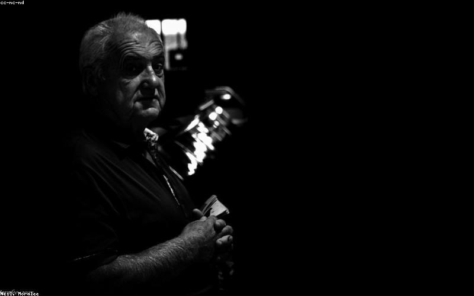
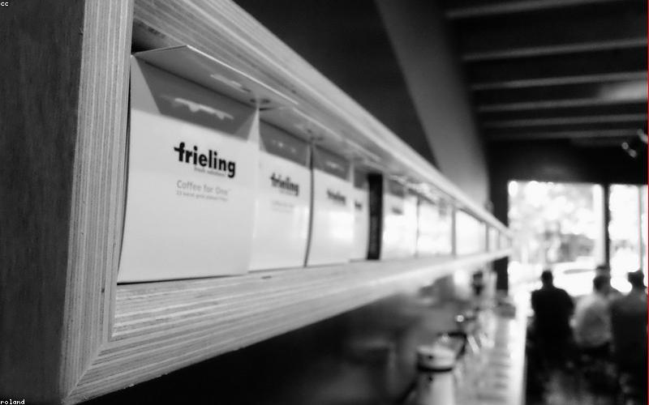
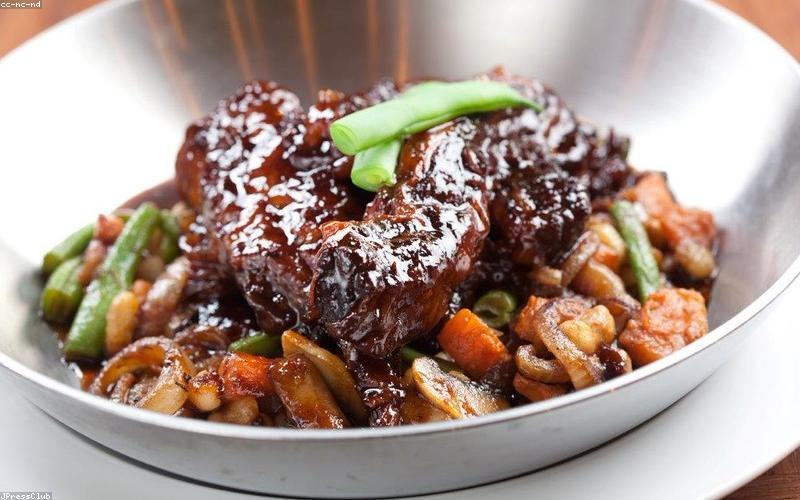
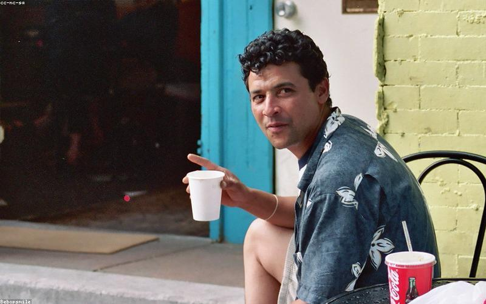
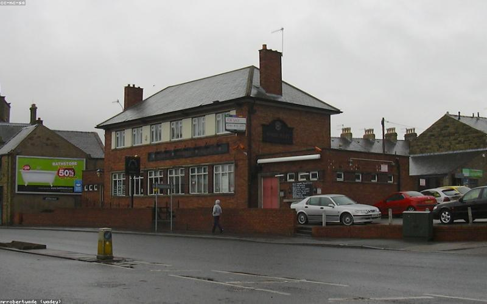
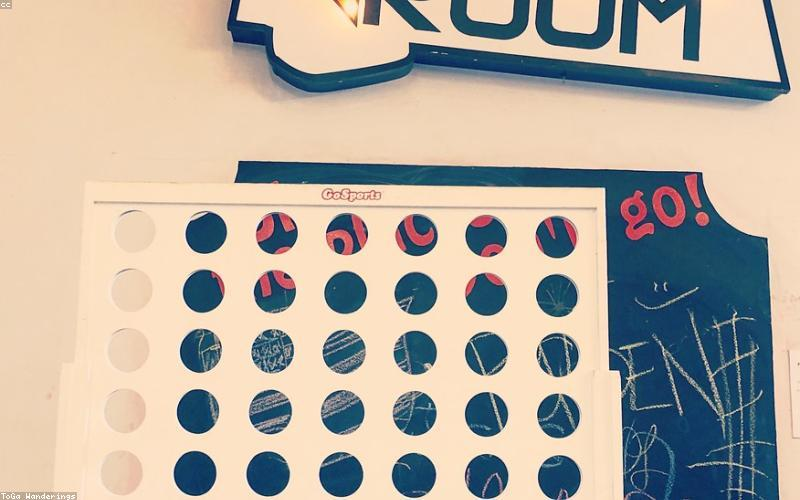
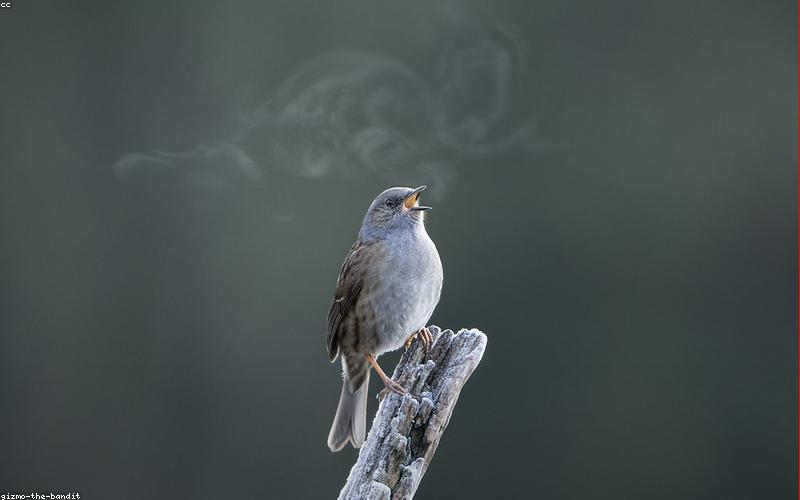
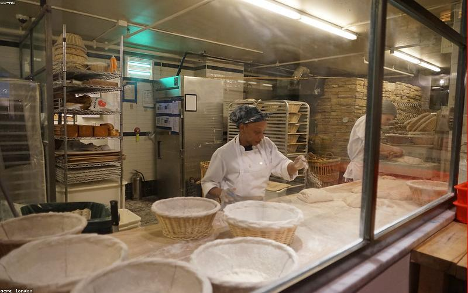

Places
Where to go,
what to do

Coffee
Vice Coffee
The Triangle, Ranelagh
The Ranelagh branch is probably the best of the Vice locations — it sits right on the Triangle and becomes the centre of the neighbourhood's morning activity. Excellent espresso, milk drinks that are actually balanced rather than just warm, and a flat white that holds its own against anywhere in the city. Quick service, good energy. The kind of café you'd visit every day if you lived nearby.
↗ MAPS

Coffee · Filter
Network Coffee Lab
Ranelagh
More experimental than Vice — Network focuses on filter and on pushing the sourcing conversation. Rotating single-origin menu, pour-over and AeroPress available alongside espresso, staff who will explain what they're serving without being condescending about it. Best when you have time to sit and engage with what's in the cup.
↗ MAPS

Coffee
Proper Order
Near Ranelagh
Neighbourhood staple with consistently good coffee and a loyal regular crowd. The kind of café that doesn't need to be fashionable because the quality speaks for itself. Good for a longer morning work session or a relaxed afternoon coffee.
↗ MAPS

Food
Coppinger Row
Ranelagh area
Mediterranean-influenced cooking with strong technique behind it. One of the better restaurants in the area that manages to feel local rather than destination. Good for an evening meal when you want proper cooking without the production. The wine list is well-chosen; the room is comfortable without trying too hard.
↗ MAPS

Food · Deli
Juniors Deli & Café
Bath Avenue, near Ranelagh
A Dublin institution for sandwiches and deli food. The Italian-influenced counter, the excellent coffee, the bread that's clearly not from a factory. The kind of place that makes a simple ham-and-cheese lunch feel like an event worth having. Best at lunch, often with a queue, always worth it.
↗ MAPS

Food · Modern Indian
Pickle
Ranelagh
Modern Indian cooking at a level Dublin didn't have until recently. Chef Sunil Ghai's food is rooted in classical Indian technique but updated — the biryani is exceptional, the spicing is precise, and the wine pairing actually makes sense. One of the best restaurants in Dublin regardless of cuisine. Book well in advance for evenings.
↗ MAPS

Bar
The Taphouse
Ranelagh
Good craft beer selection in a comfortable pub environment. Not trying to be anything other than a good local pub with decent beer. The kind of place you end up staying at longer than planned.
↗ MAPS

Bar
The Dropping Well
Milltown Road, near Ranelagh
A proper pub on the Dodder river with a beer garden that's underrated. Quieter than the Triangle bars, good for an afternoon pint before the evening. The river walk alongside it is good for a post-lunch walk.
↗ MAPS

Market · Sunday
Ranelagh Market
Ranelagh Village
Sunday artisan food market in the village — not the biggest but reliably good. Irish artisan producers: cheese, preserves, bread, hot food. Best combined with a Sunday morning coffee circuit around the Triangle.
↗ MAPS